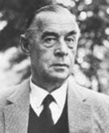

(1898 – 1970)

I. Dünya Savaşı'na çocukluktan yeni çıktığı bir yaşta katılanlardan biri olan Erich Maria Remarque, cephede yaşadıklarını "Batı Cephesinde Yeni Bir Şey Yok" romanında anlatınca insanlık tarihinde bir savaşı bu kadar net ve doğrudan anlatan belki de ilk yazar olma şansını elde etti.
Asıl adı "Erich Paul Remark" olan Alman romancı Erich Maria Remarque (okunuşu: Erih Maria Remark), 22 Haziran 1898 tarihinde Almanya'nın Osnabrück kentinde doğdu. Roma kilisesine bağlı olan Katolik bir ailenin çocuğuydu. Babası Peter Remark, bir basımevi ustasıydı. Osnabrück arşivlerinde bulunan nüfus kayıtlarına göre aile 17. yüzyıldaki ihtilalde Katoliklere yapılan baskılar yüzünden Fransa'dan göç etmişti. Önceleri Remarque olan soyisimleri, Alman imlasına göre "Remark" olmuştu. Erich Maria Remark bir süre Münster Üniversitesi'nde öğrenim gördü ve bu dönemde şiirler, öyküler ve bir de roman yazarak yazarlık kariyerine başladı. Bu dönemde kaleme aldığı ve sonradan bitirip 1920 yılında yayımladığı romanının adı Rüya Odası'dır. Yazar, on sekiz yaşında I. Dünya Savaşı'na katılmak zorunda kaldı ve 12 Haziran 1917'de Batı Cephesi'ne tayin edildi. Bir süre sonra şarapnelle ağır derecede yaralandı ve savaşın kalanını Almanya'da bir hastanede geçirdi.
Savaştan sonra öğretmenlik, editörlük, gazetecilik ve kütüphanecilik gibi işler yaptı. 1927'de o sırada çalışmakta olduğu Sport im Bild dergisinde tefrika edilen Ufuktaki Durak romanını yazdı. Bu roman, ancak 1998 yılında kitap olarak piyasaya çıkmıştır.
1927 yılında sadece birkaç ay içinde yazıp bitirdiği ve savaşın mutlak kötülüğünü 19 yaşındaki bir askerin gözünden anlattığı en ünlü eseri Batı Cephesinde Yeni Bir Şey Yok için uzun süre yayımcı aradıktan sonra kitap, 1929'da yayımlandı. Bu kitabın ardından savaş zamanı ve sonrasını yalın bir dille ve duygusal bir gerçekçilikle anlattığı başka eserleri de yayımlandı.
1931'de yayımlanan Dönüş Yolu adlı romanından sonra Porto Ronco'da bir ev alarak İsviçre'ye yerleşti. Mayıs 1933'te Naziler, yazarın eserlerini yaktılar ve yasakladılar. Yazarın sonraki romanı Üç Yoldaş (1937), Weimar Cumhuriyeti yıllarını konu alıyordu. Remarque'nin dördüncü romanı İnsanları Seveceksin, 1941 yılında İngilizce ve Almanca olarak yayımlandı. 1945'te çıkan Zafer Takı ise büyük ilgi gördü ve dünya çapında beş milyondan fazla sattı.
Remarque, 1938'de Alman vatandaşlığından çıkarıldı ve 1939'da Amerika Birleşik Devletleri'ne göç etti. Yazarın Almanya'da bıraktığı kız kardeşi, 1943 yılında Nazi "Halk Mahkemeleri" tarafından "halkın moralini çökertmekten" yargılandı ve idam edildi. 1948'de Remarque İsviçre'ye döndü ve 1952 yılında Hayat Kıvılcımı adlı romanı yayımlandı. 1954 yılında Yaşamak Zamanı, Ölmek Zamanı adlı romanı yayımlanan yazarın bu kitabı 1958'de yönetmen Douglas Sirk tarafından Sevmek Zamanı, Ölmek Zamanı adıyla sinemaya uyarlandı hatta Remarque da filmde ufak bir rolde aldı.
1955 yılından itibaren, Hollywood'da filme çekilen çeşitli senaryolar yazdı. 1962 yılında yayımlanan ve yaklaşık bir milyon satan Lizbon'da Gece adlı romanı Remarque'ın bitirdiği son kitabı oldu. İlk eşi Ilse Jutta Zambona ile 1925 yılında evlenip birkaç yıl sonra boşanan Remarque, 1938 yılında tekrar evlendiği eşinden 1957'de ayrıldıktan sonra, 1958'de Hollywood'da tanıştığı Paulette Goddard ile evlendi. 25 Haziran 1970 tarihinde, 72 yaşında İsviçre'nin Locarno kentinde ölen yazar Erich Maria Remarque evinin bulunduğu Ronco'da toprağa verildi. 1990'da ölen Paulette Goddard ise Avrupa kültürü üzerine çalışmalar yapılması şartıyla New York Üniversitesi'ne yirmi milyon dolara yakın miras bıraktı. Bu paranın çok büyük bölümü Remarque'ın romanlarının telif hakkıydı.
Seçme Romanları: Batı Cephesinde Yeni Bir Şey Yok (1929 – Engin Yayıncılık, 2006), Dönüş Yolu (1931), İnsanları Seveceksin (1941 – Evrensel Basım Yayın, 2004), Hayat Kıvılcımı (1952), Yaşamak Zamanı, Ölmek Zamanı (1954)